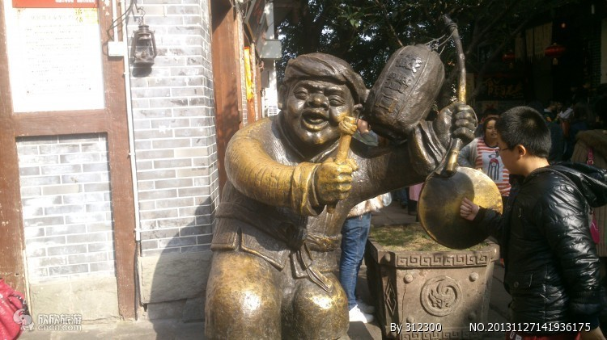
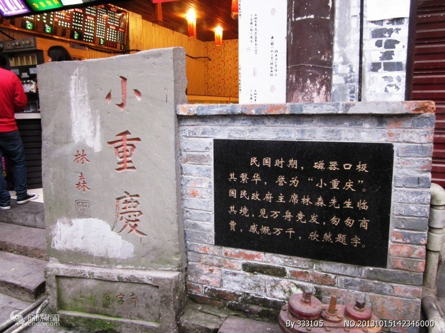
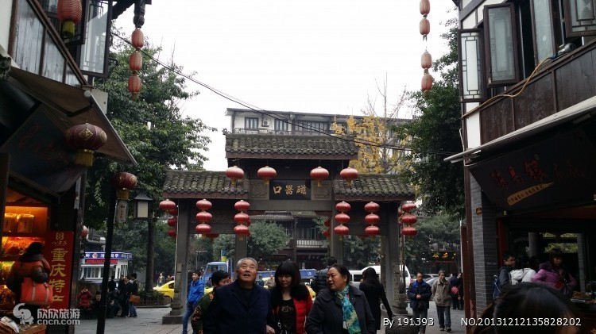

重庆·磁器口
景点图片


- 
- 
- 


磁器口，以出产瓷器而得名。在1918年地方商绅集资在青草坡创建了新工艺制瓷的“蜀瓷厂”，瓷器质地很好，品种繁多，名声渐大，产品远销省内外。渐渐地“磁器口”名代替了“龙隐镇”。现已发现古窑遗址20余处。
古镇磁器口有12条街巷，街道两旁大多是明清风格的建筑，地面由石板铺成，沿街店铺林立。商贸集中在大码头和靠码头的金蓉正街。现今磁器口古镇保存了较为完整的古建筑，开发了榨油、抽丝、制糖、捏面人、川戏等传统表演项目和各种传统小吃、茶馆等，每年春节举办的瓷器口庙会四古镇最具特色的传统活动，吸引数万市民前往参与，是距重庆主城区最近的古镇景观。在古镇磁器口最有特色的一景是茶馆。昔日在这千年古镇，随处可见茶馆。当年的水手、袍哥大爷、闲杂人等都喜爱出入此间，茶馆成了龙蛇混杂之地。直到如今，茶馆仍是磁器口一景，百来米长的老街便有13家茶馆，家家茶客满座，古风犹存。名特小吃毛血旺、软烩千张、椒盐花生被誉为磁器口的“三宝”。
最佳季节：3-5月、9-11月。春秋最佳。春季去瓷器口，感受着江边的暖暖春风，品尝着有名的瓷器口小麻花，别有一番风味；夏季酷热，冬季多大雾。
建议游玩：3-6小时
门票：免费
开放时间：全天
地址：中国重庆市沙坪坝区磁南街1号